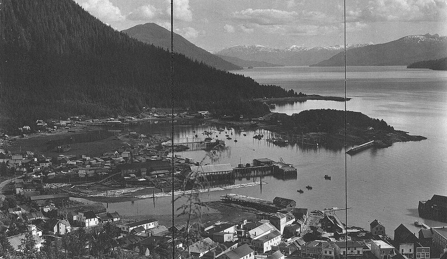
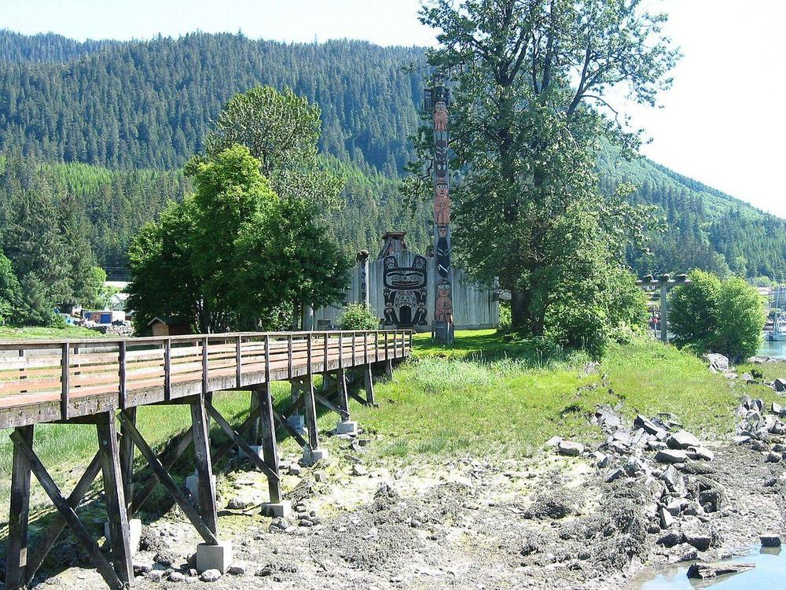

Directory / Southeast Alaska / Wrangell, AK
Wrangell tides — Reliance, Heritage & Shoemaker Bay harbors
High and low tides for the coming week from NOAA station 9451204 (Wrangell, Wrangell Island — 56.4700, -132.3870). Times are local (AKST/AKDT). Heights are feet above Mean Lower Low Water (MLLW). Wrangell sits at the north tip of Wrangell Island, where Zimovia Strait, Stikine Strait, and Eastern Passage meet, a few miles south of the Stikine River mouth. The harbor basin downtown wraps around Chief Shakes Island and its tribal house. City and Borough of Wrangell Ports & Harbors runs three harbor basins (the downtown Wrangell Harbor Basin with Reliance Harbor, Heritage Harbor, and Shoemaker Bay), the City Dock, and a Marine Service Center with two boat lifts. Gillnetters, trollers, shrimpers, charter boats, and Stikine River jet boats all work from here.
Big tides, two grids & a weekday-only fuel dock
The tide swing. Wrangell has some of the biggest tides in Southeast. Mean Higher High Water is 15.96 ft above MLLW (Sitka’s is 9.9 ft). In the NOAA predictions fetched 2026-11-16, the largest swing in the next five weeks is on Wednesday, November 25, 2026: a 19.2 ft high at 12:35 PM, then a −4.1 ft low at 7:09 PM, a drop of about 23.3 ft in six and a half hours. Minus tides come every evening from Nov 22 through Nov 29 and again from Dec 5 through Dec 12, all after dark (sunset is about 3:38 PM now and about 3:11 PM by mid-December). Check ramp depth and your mooring lines before those evenings.
Grids and haul-out. The city has two tidal grids: Chief Shakes Island for vessels under 40 ft and Shoemaker Bay for larger boats (the north side needs prior approval). Use is first-come, first-served with a two-day limit. Daylight lows for grid work are scarce in winter. The best ones in the next five weeks are about 2.0 ft at 3:29 PM on Fri Nov 20, 2.2 ft at 2:53 PM on Thu Dec 3, and 1.7 ft at 2:42 PM on Sat Dec 19, each within an hour of sunset. For a full haul-out, the city’s Marine Service Center has a 150-ton Travelift, a 300-ton ASCOM boat lift (beam to 26.5 ft), a 40-ton hydraulic trailer, an approved washdown pad, and room for more than 85 boats. It is self-service, so owners can do their own work or hire the local trades in the directory below. Book through the Harbor Office.
Fuel and arrival. Petro Marine’s fuel dock in the Harbor Basin (opposite Reliance Float) is open Monday–Friday 8 a.m.–5 p.m. only, according to the harbor’s vendor page. If you arrive on a weekend, plan your fuel. Call the harbor on VHF 16 (staffed 7 a.m.–11 p.m.) and move to the working channel they give you. Most transients go to Heritage Harbor or Reliance Float. Vessels over 100 ft must contact the Harbor Office ahead of time. A U.S. Customs agent is on site for marine arrivals.
Weather. The api.weather.gov zone lookup for the water just off the tide station returns PKZ036 Clarence Strait. Sumner Strait (PKZ035) is the route west toward Point Baker and the outside. In the forecast issued 2:40 PM AKST Mon Nov 16, 2026, Clarence Strait carried a Gale Warning through Tuesday (SE 35 kt, gusts to 40, seas 12 ft tonight), and Sumner Strait had a Small Craft Advisory.
Computed from NOAA CO-OPS hi/lo predictions for 9451204 (2026-11-17 through 2026-12-21) and station datums (1983–2001 epoch), the NWS coastal waters forecast text and api.weather.gov zone lookup, and the Wrangell Ports & Harbors pages for harbors, the Marine Service Center, and vendors (vendor list updated November 9, 2026), all checked 2026-11-16 AKST. Sunset times are approximate (computed). Not for navigation.
Wrangell then & now
Historic


Current


Official NOAA predictions Station home NOAA chart viewer View on Windy
Port Sponsor — Wrangell, AK
Top placement for fuel docks, marinas, yards, and marine businesses.
$25–$50 / month
Sunday, November 22, 2026
| Tide | Time (local) | Height (MLLW) |
|---|---|---|
| Low | 4:12 AM | 2.5 ft |
| High | 10:32 AM | 17.5 ft |
| Low | 5:00 PM | -1.7 ft |
| High | 11:24 PM | 15.0 ft |
Monday, November 23, 2026
| Tide | Time (local) | Height (MLLW) |
|---|---|---|
| Low | 4:57 AM | 2.4 ft |
| High | 11:12 AM | 18.4 ft |
| Low | 5:42 PM | -3.0 ft |
Tuesday, November 24, 2026
| Tide | Time (local) | Height (MLLW) |
|---|---|---|
| High | 12:11 AM | 15.4 ft |
| Low | 5:39 AM | 2.3 ft |
| High | 11:52 AM | 19.0 ft |
| Low | 6:25 PM | -3.9 ft |
Wednesday, November 25, 2026
| Tide | Time (local) | Height (MLLW) |
|---|---|---|
| High | 12:57 AM | 15.6 ft |
| Low | 6:22 AM | 2.4 ft |
| High | 12:35 PM | 19.2 ft |
| Low | 7:09 PM | -4.1 ft |
Thursday, November 26, 2026
| Tide | Time (local) | Height (MLLW) |
|---|---|---|
| High | 1:43 AM | 15.5 ft |
| Low | 7:05 AM | 2.7 ft |
| High | 1:20 PM | 19.0 ft |
| Low | 7:55 PM | -3.8 ft |
Friday, November 27, 2026
| Tide | Time (local) | Height (MLLW) |
|---|---|---|
| High | 2:32 AM | 15.2 ft |
| Low | 7:53 AM | 3.1 ft |
| High | 2:08 PM | 18.3 ft |
| Low | 8:43 PM | -3.0 ft |
Saturday, November 28, 2026
| Tide | Time (local) | Height (MLLW) |
|---|---|---|
| High | 3:23 AM | 14.8 ft |
| Low | 8:46 AM | 3.7 ft |
| High | 3:00 PM | 17.1 ft |
| Low | 9:36 PM | -1.9 ft |
Sunday, November 29, 2026
| Tide | Time (local) | Height (MLLW) |
|---|---|---|
| High | 4:18 AM | 14.4 ft |
| Low | 9:47 AM | 4.2 ft |
| High | 3:58 PM | 15.7 ft |
| Low | 10:32 PM | -0.6 ft |
Tide data: NOAA CO-OPS station 9451204, predictions (hi/lo, MLLW, local standard/daylight time). Refreshed with each nightly build; the marine-weather snapshot time below shows the latest fetch. Currents: the nearest NOAA current station in our port list is PCT3126 (Wrangell Harbor entrance, about 1.5 km away) — see NOAA current predictions.
Marine weather & cameras
NWS marine forecast — Clarence Strait (PKZ036)
Issued 733 PM AKST Sat Nov 21 2026. Snapshot fetched 2026-11-21 21:15 AKST from NWS text product. Official zone forecast · Raw text
- .TONIGHT...NE wind 10 kt. Seas 3 ft in the evening then 2 ft or less.
- .SUN...SE wind 15 kt. Seas 3 ft.
- .SUN NIGHT...NE wind 20 kt. Seas 5 ft.
- .MON...NE wind 30 kt. Seas 6 ft.
- .MON NIGHT...NE gale to 35 kt. Seas 7 ft. Rain.
- .TUE...E wind 30 kt. Seas 8 ft.
- .WED...E gale to 35 kt. Seas 8 ft.
- .THU...SE gale to 35 kt. Seas 7 ft.
NWS marine forecast — Sumner Strait (PKZ035)
Issued 733 PM AKST Sat Nov 21 2026. Snapshot fetched 2026-11-21 21:15 AKST from NWS text product. Official zone forecast · Raw text
- .TONIGHT...NE wind 10 kt. Seas 3 ft in the evening then 2 ft or less.
- .SUN...E wind 10 kt. Seas 2 ft or less.
- .SUN NIGHT...NE wind 15 kt. Seas 3 ft.
- .MON...NE wind 25 kt. Seas 5 ft.
- .MON NIGHT...NE wind 30 kt. Seas 6 ft.
- .TUE...E wind 30 kt. Seas 6 ft.
- .WED...E wind 20 kt. Seas 4 ft.
- .THU...E wind 20 kt. Seas 2 ft or less.
Nearby NDBC observation — Wrangell Harbor (WGXA2, Marine Exchange of Alaska)
wind 80°, 2 kt, gust 3 kt, air 33°F, 1011.5 hPa
Observation time 2026-11-21 21:02 AKST (converted to AKST). Attribution: NOAA NDBC station WGXA2. Snapshot fetched 2026-11-21 21:15 AKST.
Nearby NDBC observation — Ship Island (SPXA2, Marine Exchange of Alaska, Clarence Strait)
wind 100°, 2 kt, gust 3 kt, air 40°F, 1010.5 hPa
Observation time 2026-11-21 21:02 AKST (converted to AKST). Attribution: NOAA NDBC station SPXA2. Snapshot fetched 2026-11-21 21:15 AKST.
Nearby NDBC observation — Cape Decision (CDEA2, NWS, mouth of Sumner Strait)
wind 60°, 5 kt, gust 6 kt, air 43°F, 1011.6 hPa
Observation time 2026-11-21 20:22 AKST (converted to AKST). Attribution: NOAA NDBC station CDEA2. Snapshot fetched 2026-11-21 21:15 AKST.
Harbor webcams
- FAA WeatherCams — Wrangell Airport (PAWG) (NE, E, and NW views from the airport just north of town; link only, not embedded)
- FAA WeatherCams — Level Island (SE, N, W, and NE views from Level Island in Sumner Strait, about 25 miles west of Wrangell on the route toward Point Baker; a good look at Sumner Strait before you go; link only)
We checked both camera sites on 2026-11-16 around 9:25 PM AKST. All four Level Island cameras and the Wrangell NE, E, and NW cameras had fresh images. The FAA lists the Wrangell site in maintenance mode, and its north camera has had no new image since Oct 28, 2026. We found no free public harbor cam run by the borough (its harbor cameras are for security). Harbor businesses with a public cam: email us and we will link it.
Wrangell boater notes (official links)
- Wrangell Ports & Harbors. Harbor Office at 671 Shakes St (head of Reliance Float): 907-874-3736, harbor@wrangell.com, VHF 16. Office hours are Monday–Friday 8 a.m.–noon and 1–4:30 p.m. A harbormaster is on duty daily 7 a.m.–11 p.m.
- Harbors page: the downtown basin (Reliance Harbor, Inner Harbor for boats under 40 ft, Standard Oil Float, Float Plane Dock, Fish & Game Float), Heritage Harbor (about 250 slips and a launch ramp), and Shoemaker Bay (250 slips, rebuilt 2018–2019). Launch permits are required at all public ramps and are sold at the Harbor Office.
- Marine Service Center: haul-out request forms, yard rules, the two grids, work and gear floats, pump-outs, used-oil tanks, and four card-operated gear hoists (two at Reliance Dock, one at the Shoemaker grid, one at the Old Mill Dock).
- Harbor vendor directory (updated November 9, 2026): welders, fabricators, mechanics, electricians, divers, surveyors, and boat-watch services. Several are listed in the directory below.
- Alaska Marine Highway — Wrangell terminal, on Stikine Ave at Evergreen, about a quarter mile north of town.
- ADF&G Southeast commercial fisheries (openers and emergency orders, including the District 6 and 8 gillnet fisheries) and Petersburg/Wrangell sport fishing.
- NOAA ENC chart viewer for Zimovia Strait, Stikine Strait, Eastern Passage, the Stikine flats, and Sumner Strait. We link to NOAA’s viewer and do not host charts.
Local marine & shore directory
Verified public listings only. List free · Get featured
Marine services
Moorage & marinas
Seafood processors & buyers
Fuel docks
Shipyards & haul-outs
Boat repair & mechanics
Marine suppliers & chandleries
Electronics sales & installation
Welding & fabrication
Canvas & upholstery
No verified listing yet — list your business free.
Surveyors
Towing & salvage
Ice & bait
Fishing charters
Ashore for boaters
Groceries & provisioning
Hardware
Liquor stores
Laundromats
No verified listing yet — list your business free.
Showers
No verified listing yet — list your business free.
Lodging
Restaurants
Medical clinics
Pharmacies
Post office & shipping
Airport & floatplane
Propane
Auto & truck rental
We checked these listings on 2026-11-16 against public sources: the Wrangell Ports & Harbors vendor directory (updated November 9, 2026), harbor, and Marine Service Center pages; the City and Borough of Wrangell business directory; Petro Marine’s location page; and each business’s own site where it has one. We list businesses only, not private individuals from the harbor list. Seafood processors come from the ADF&G 2026 Southeast shore-based processor map (Trident Seafoods, Sea Level Seafoods, Peninsula Seafoods, Heritage Fisheries) and NOAA Fisheries’ 2025 federal processor permit list (Pacific Seafood – Wrangell, which runs the Sea Level plant). Some processor lines are seasonal. Listings are a courtesy, not an endorsement. Basic listings are free; a Featured listing is $10/month or $100/year. For corrections or a free listing, contact J.L. Miller at pacifictides.ak@gmail.com (email only).
Local news — Wrangell, AK
Plain links to local outlets. Always check the source for the latest. Local news partners welcome.
Free weekly tides & marine weather
Get a short email for your port. We do not sell your email. Privacy.
Mailing list powered by Buttondown.
Boating gear on Amazon
As an Amazon Associate I earn from qualifying purchases.
Helpful search links for common gear. Prices and availability are on Amazon.
Other Alaska ports
Sources
- NOAA CO-OPS station 9451204 — Wrangell (MDAPI name Wrangell; lat 56.47, lng -132.387; verified 2026-11-16). Datums (1983–2001 epoch): MHHW is 15.96 ft and MHW is 15.08 ft above MLLW.
- Nearby currents reference: PCT3126 (not plotted on this page)
- Predictions API:
api.tidesandcurrents.noaa.gov/api/prod/datagetter(product=predictions, interval=hilo, datum=MLLW, time_zone=lst_ldt) - NWS Juneau coastal waters forecast zones PKZ036 Clarence Strait (returned by the api.weather.gov zone lookup at 56.47,-132.39 and 56.48,-132.40, just off the station; the town point itself falls outside any zone polygon; checked 2026-11-16) and PKZ035 Sumner Strait
- NDBC observations: WGXA2 Wrangell Harbor (Marine Exchange of Alaska), SPXA2 Ship Island (Marine Exchange of Alaska, Clarence Strait), CDEA2 Cape Decision (NWS, at the mouth of Sumner Strait)
- Wrangell Ports & Harbors: harbors, ports, Marine Service Center, vendor directory, and about pages (checked 2026-11-16)
- FAA WeatherCams site data for Wrangell (site 73) and Level Island (site 3), checked 2026-11-16
- ADF&G 2026 Southeast Alaska shore-based processors by port; NOAA Fisheries 2025 federal processor permits
- Directory:
data/businesses.csvrows for port_slug=wrangell, each with its public source URL (verified 2026-11-16) - Photos: U.S. National Archives (public domain); James Crippen (CC BY 2.5) via Wikimedia Commons. Graphics: original Pacific Tides artwork.